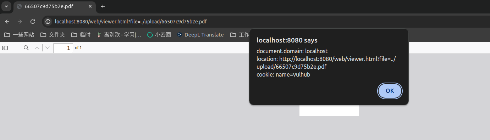

PDF.js 任意JavaScript代码执行（CVE-2024-4367）¶
PDF.js是Mozilla推出的一款开源PDF文件阅读器。
其4.1.392版本及以前，PDF.js中存在一处JavaScript代码注入漏洞。
参考链接：
漏洞环境¶
执行如下命令启动一个使用了PDF.js 4.1.392的服务器：
docker compose up -d
服务启动后，访问http://your-ip:8080你可以看到一个上传页面。
漏洞复现¶
上传恶意PDF文件poc.pdf，即可触发XSS弹窗：
